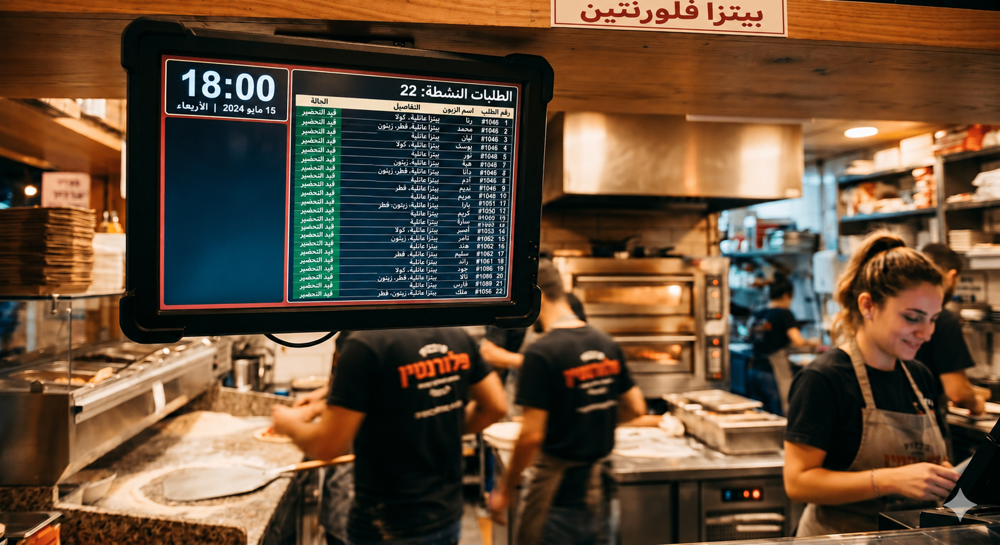
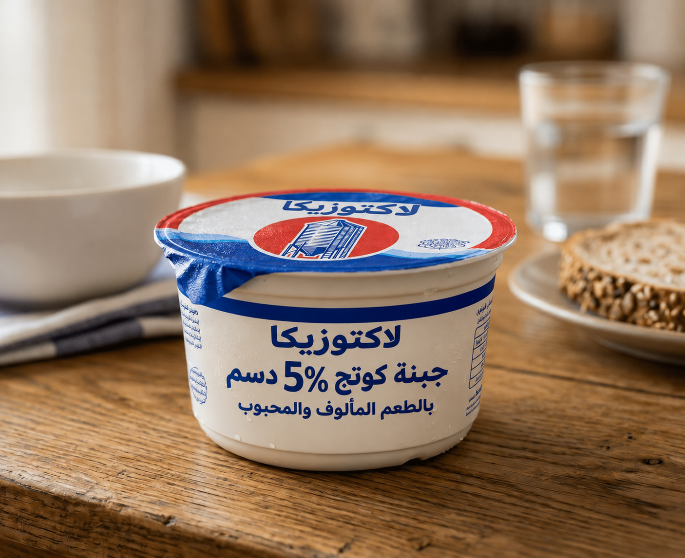

أنهينا مرحلة التعلّم، وننتقل الآن إلى التدريب الأول، وهو يتضمّن
عليكم أن تجيبوا إجابةً صحيحة عن 4 أسئلة على الأقل.
75% من عدد معيّن تساوي 150.
أوجدوا الكلّ:
تلقّى مطعم البيتزا "الياسمين" يوم الخميس حتى الساعة 18:00
22 طلبًا لبيتزا عائلية.
وقد شكّلت هذه الطلبات 50% من طلبات البيتزا العائلية
التي تلقّاها المطعم حتى نهاية ذلك المساء.
كم طلبًا تلقّى المطعم حتى نهاية ذلك المساء؟

بدأ طلاب الصف الثامن في مدرسة "الشروق" بجمع المال لحفلة نهاية السنة.
وبعد 3 أيام جمعوا 1300 ₪، أي 65% من المبلغ المطلوب.
ما هو المبلغ المطلوب لتمويل الحفلة؟
في درس الرياضيات رسمت المعلّمة على اللوح مخططًا دائريًا مقسّمًا إلى 5 قطاعات بألوان مختلفة:
أزرق – 31%
أخضر – 24%
برتقالي – 18%
أحمر – 12%
رمادي - ؟
حرّكوا المنزلقات ولاحظوا كيف يتغيّر القطاع الرمادي.
أ. ما النسبة المئوية التي يمثّلها القطاع الرمادي من الدائرة الكاملة؟
في درس الرياضيات، يتعلّم الطلاب موضوع المخطط الدائري.
رسمت المعلّمة على اللوح مخططًا دائريًا مقسّمًا إلى 5 قطاعات بألوان مختلفة:
أزرق – 31%
أخضر – 24%
برتقالي – 18%
أحمر – 12%
وجدنا أنّ القطاع الرمادي يشكّل 15%.
مساحة القطاع الخامس في الدائرة هي 45 سم². ب. ما هي المساحة الكلية للدائرة الكاملة؟
في بلدة "الأفق" يتطوّع 120 طالبًا وطالبة في أماكن مختلفة في المجتمع المحلي.
يعرض الجدول التالي جزءًا من توزيع الطلاب المتطوّعين على الأماكن المختلفة:
أكملوا الجدول.
| مكان التطوع | عدد المتطوعين | النسبة المئوية للمتطوعين |
|---|---|---|
| جمعية حماية الطبيعة | 30 |
%
|
| جمعية الرفق بالحيوان | 15% |
تحتوي علبة جبنة كوتج على دهون بنسبة 5%، أي 12.5 غرام من الدهون.
أ. ما كمية جبنة الكوتج في هذه العلبة؟
اشترى خالد 5 علب من جبنة الكوتج وأفرغها في وعاء كبير لتحضير فطيرة.
ب. ما كمية جبنة الكوتج في الوعاء؟
تحتوي علبة جبنة كوتج من الشركة أ على 5% دهون، أي 12.5 غرام من الدهون.
تحتوي علبة جبنة كوتج من الشركة ب على 9% دهون، أي 18 غرامًا من الدهون.
ج. العلبة التي فيها 9% دهون، مقارنةً بالعلبة التي استخدمها خالد وفيها 5% دهون، هي:
